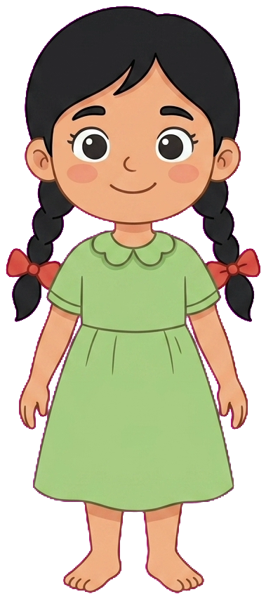
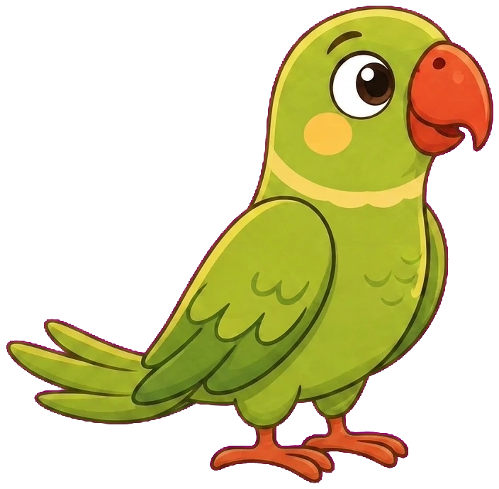
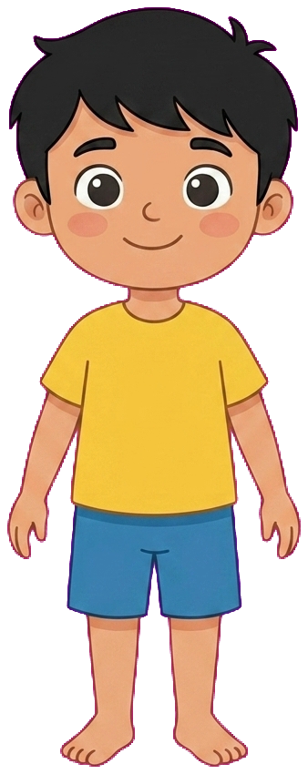

The sky is installed and shipping; the other six are built and ready to
install. Each card has a speaker to mute it. Options and gotchas in
ANIMATIONS.md
Rebuild
Compare: old
Glow: opacity
Click any drifting star
2. Nudge hand tap hint
Ripple: on
Fingertip
Target
Compare: old
3. Correct answer confetti
Replay
Compare: old
4. Celebration star burst Replay
Compare: old
Replay
Crown: on
Compare: old
3
7
4
tap a tile - it releases and is tappable again
Replay
Eliminate
Compare: old
7. Tap the object - outline, any shape



tap the parrot
Reset
Mute the rest
Stroke: 4px
Compare: old